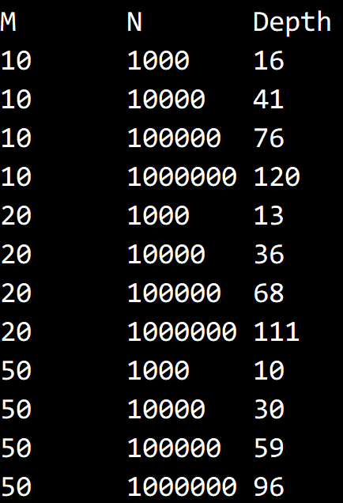

© 2019 《算法（第四版）》C# 题解 | Provided By 沈星繁
搜索解答
目前已完成到 2.5
2.3.28
上次更新：2019-02-11
题目
2.3.28 递归深度。 用经验性的研究估计切换阈值为 M 的快速排序在将大小为 N 的不重复数组排序时的平均递归深度， 其中 M=10、20 和 50，N=103、104、10^5 和 10^6。
解答
对 Sort 方法做修改，添加一个层层传递的 depth 参数，每加一层 depth 就加一，结束时取左右较大的 depth 返回。
protected int Sort<T>(T[] a, int lo, int hi, int depth) where T: IComparable<T>
{
if (hi <= lo) // 别越界
return depth;
if (hi - lo <= this.M)
{
// 调用插入排序
for (int i = lo; i <= hi; i++)
for (int k = i; k > lo && Less(a[k], a[k - 1]); k--)
Exch(a, k, k - 1);
return depth;
}
int j = Partition(a, lo, hi);
int left = Sort(a, lo, j - 1, depth + 1);
int right = Sort(a, j + 1, hi, depth + 1);
return Less(left, right) ? right : left;
}测试结果 
代码
using System;
using System.Diagnostics;
using Quick;
namespace _2._3._28
{
/// <summary>
/// 快速排序类。
/// </summary>
public class QuickSortInsertion : BaseSort
{
/// <summary>
/// 切换到插入排序的阈值。
/// </summary>
public int M { get; set; }
/// <summary>
/// 上一次排序的最大递归深度。
/// </summary>
public int Depth { get; private set; }
/// <summary>
/// 默认构造函数。
/// </summary>
public QuickSortInsertion()
{
this.M = 10;
}
/// <summary>
/// 用快速排序对数组 a 进行升序排序。
/// </summary>
/// <typeparam name="T">需要排序的类型。</typeparam>
/// <param name="a">需要排序的数组。</param>
/// <returns>递归深度。</returns>
public override void Sort<T>(T[] a)
{
Shuffle(a);
this.Depth = Sort(a, 0, a.Length - 1, 0);
Debug.Assert(IsSorted(a));
}
/// <summary>
/// 用快速排序对数组 a 的 lo ~ hi 范围排序。
/// </summary>
/// <typeparam name="T">需要排序的数组类型。</typeparam>
/// <param name="a">需要排序的数组。</param>
/// <param name="lo">排序范围的起始下标。</param>
/// <param name="hi">排序范围的结束下标。</param>
protected int Sort<T>(T[] a, int lo, int hi, int depth) where T: IComparable<T>
{
if (hi <= lo) // 别越界
return depth;
if (hi - lo <= this.M)
{
// 调用插入排序
for (int i = lo; i <= hi; i++)
for (int k = i; k > lo && Less(a[k], a[k - 1]); k--)
Exch(a, k, k - 1);
return depth;
}
int j = Partition(a, lo, hi);
int left = Sort(a, lo, j - 1, depth + 1);
int right = Sort(a, j + 1, hi, depth + 1);
return Less(left, right) ? right : left;
}
/// <summary>
/// 对数组进行切分，返回枢轴位置。
/// </summary>
/// <typeparam name="T">需要切分的数组类型。</typeparam>
/// <param name="a">需要切分的数组。</param>
/// <param name="lo">切分的起始点。</param>
/// <param name="hi">切分的末尾点。</param>
/// <returns>枢轴下标。</returns>
private int Partition<T>(T[] a, int lo, int hi) where T : IComparable<T>
{
int i = lo, j = hi + 1;
T v = a[lo];
while (true)
{
while (Less(a[++i], v))
if (i == hi)
break;
while (Less(v, a[--j]))
if (j == lo)
break;
if (i >= j)
break;
Exch(a, i, j);
}
Exch(a, lo, j);
return j;
}
/// <summary>
/// 打乱数组。
/// </summary>
/// <typeparam name="T">需要打乱的数组类型。</typeparam>
/// <param name="a">需要打乱的数组。</param>
private void Shuffle<T>(T[] a)
{
Random random = new Random();
for (int i = 0; i < a.Length; i++)
{
int r = i + random.Next(a.Length - i);
T temp = a[i];
a[i] = a[r];
a[r] = temp;
}
}
}
}测试用例
using System;
using System.Collections.Generic;
using System.Linq;
using System.Text;
using System.Threading.Tasks;
namespace _2._3._28
{
/*
* 2.3.28
*
* 递归深度。
* 用经验性的研究估计切换阈值为 M 的快速排序
* 在将大小为 N 的不重复数组排序时的平均递归深度，
* 其中 M=10、20 和 50，N=10^3、10^4、10^5 和 10^6。
*
*/
class Program
{
static void Main(string[] args)
{
Console.WriteLine("M\tN\tDepth");
Trial(10);
Trial(20);
Trial(50);
}
/// <summary>
/// 进行一次测试。
/// </summary>
/// <param name="m">要使用的阈值</param>
static void Trial(int m)
{
QuickSortInsertion sort = new QuickSortInsertion();
int trialTime = 5;
// 由于排序前有 Shuffle，因此直接输入有序数组。
// M=10
sort.M = m;
int totalDepth = 0;
for (int N = 1000; N < 10000000; N *= 10)
{
for (int i = 0; i < trialTime; i++)
{
int[] a = new int[N];
for (int j = 0; j < N; j++)
{
a[j] = j;
}
sort.Sort(a);
totalDepth += sort.Depth;
}
Console.WriteLine(sort.M + "\t" + N + "\t" + totalDepth / trialTime);
}
}
}
}